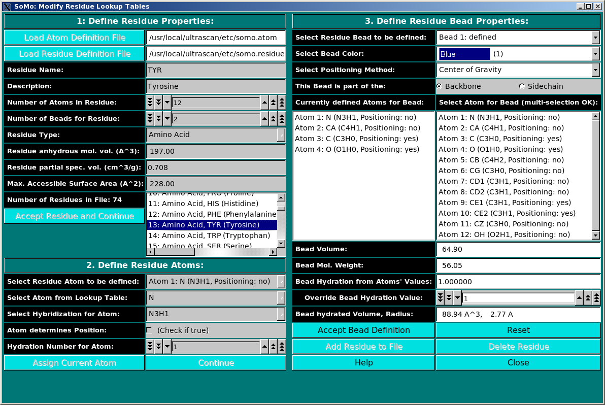
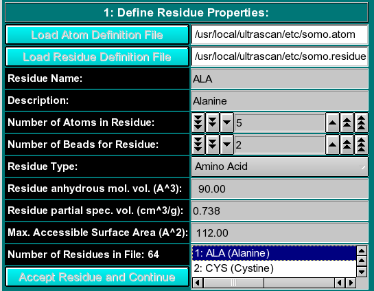
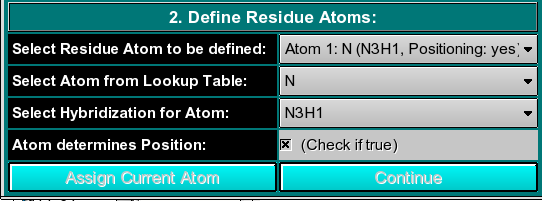

| |
Manual |

This module is used to define all residues that can be found in PDB files. In this module, you can also define the rules which are used to convert them into beads. You can add new residues or modify the properties of the existing ones. Three panels are available:
Panel 1: Define Residue Properties:
|  |
|
In this panel, you can add or modify the general properties of a residue.
To add a new residue, you must first load the atom table
containing the atomic groups, as defined in the PDB file (N, CA, CB, etc.),
that make up the residue.
The Residue anhydrous mol. vol. (A^3) field has to be filled with a
value usually derived from crystallography (see Tsai et al., J. Mol. Biol.
290:253-266, 1999; Nadassy et al., Nucl. Acid Res. 29:3362-3376, 2001; Voss
and Gerstein, J. Mol. Biol. 346:477-492, 2005; Perkins, Eur. J. Biochem.
157:169-180, 1986). This is the volume that defines the total anhydrous volume
of the bead(s) that will be used to model the residue, and for non tabulated
entries it can be computed using on-line programs such as the 3V Contact Volume Calculator (http://www.molmovdb.org/cgi-bin/3v.cgi; a 0
Angstrom probe radius should be used). For ions, we used the values in Table I of
Kiriukhin and Collins (Biophys. Chem. 99:155-168, 2002).
When all fields have been filled, the residue is accepted by pressing the Accept Residue and Continue button, and the Number of Residues in File field is consequently updated. |
Panel 2: Define Residue Atoms:
|  |
|
In this panel, the atoms making up the residue are chosen, using the
atom table previously selected. The atoms are numbered
sequentially up to the value entered in the Number of Atoms in Residue
field in the previous panel, and can be chosen from the Select Residue Atom
to be defined pull-down menu.
|
Panel 3: Define Residue Bead Properties:
 |
|
In the last panel of this module, the atoms in each residue are assigned
to bead(s), and each bead's properties are then defined.
The next field, Hydration Number for Bead, assigns a theoretical number of water of hydration molecules to the bead. For amino acids, this number is defined for each residue side- and main-chain based on the values reported by Kuntz and Kauzmann (Adv. Protein Chem. 28:239-345, 1974). For carbohydrates, we used the values of Shiio (J. Am. Chem. Soc. 80:70-73, 1958). For ions, we used the values in Table I of Kiriukhin and Collins (Biophys. Chem. 99:155-168, 2002). For the other residues, and for further information, see Brookes et al., Eur. Biophys. J. in press, 2009, and Rai et al., Structure 13:723-734, 2005. The volume of these water molecule(s) (defined under the Miscellaneous Options; see here) will be later automatically added to the anhydrous volume of the bead to define its hydrated volume and radius.
Center of gravity: between the atoms assigned to the bead and marked
"yes" in the Atom determines Position checkbox in Panel 2;
Currently, only the "Center of gravity" option is being used. Each bead needs then to be defined as belonging to the backbone
or to the sidechain of the molecule by clicking the appropriate box
in the This Bead is part of the: field. This determines at which sequential stage the bead
will be processed during overlap removal.
To Edit an already defined residue, double-click on its name on the list
(that can be scrolled) present in the window next to the Number of residues in
File field in Panel 1. All the stored properties will then appear
first in the Panel 1 fields, which can then be updated. By clicking on the
Accept Residue and Continue button, the properties listed in Panel 2
become then accessible, and can be likewise edited. Finally, the Panel 3
options will become again available for editing by clicking on the
Assign Current Atom button in Panel 2. Accept Bead Definition
and Add Residue to File buttoms will then allow to update the
residue table (somo.residue).
|
This document is part of the UltraScan Software Documentation
distribution.
Copyright © notice.
The
latest version of this document can always be found at:
http://www.ultrascan.uthscsa.edu
Last modified on May 12, 2009.
{kind=link}
{kind=link}